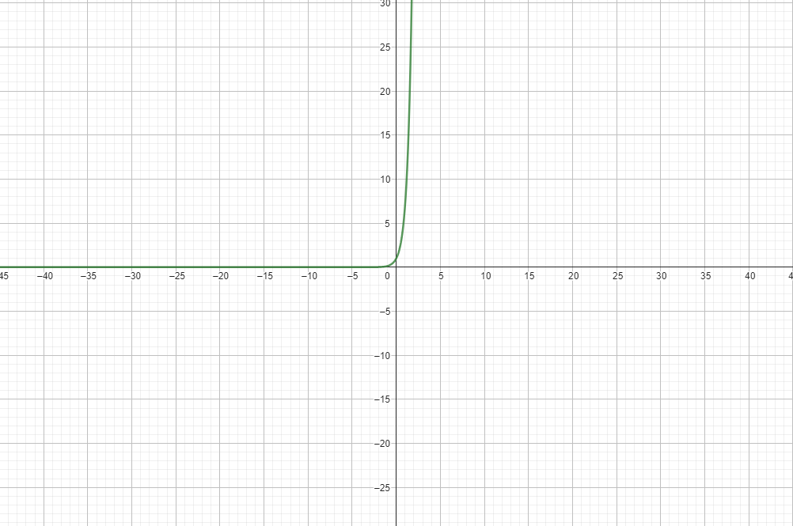
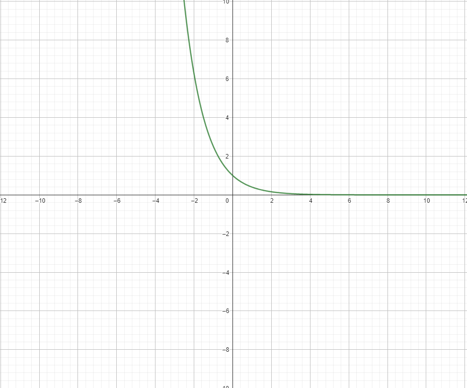

Nesse conteúdo eu não tive tanta dificuldade em comparação com Logaritmos. Mas como qualquer outro contéudo de matemática, eu tive uma certa
dificuldade já que não sou bom na matéria.
Inicio
Nesse contéudo foi estudado Função Exponencial,
Exponenciação,
Gráfico da Função Exponencial,
Raiz enésima.
As funções exponenciais têm a forma b • ax, onde a e b são números reais. Um exemplo disso é a função f (x)= 3 • 2.x
Sendo b um número negativo:
bn = b • b • b • • • b • b (n vezes)
bm • bn = bm+n
(bm)n = bm+n
b-n = 1 ÷ bn
bm ÷ bn = bm-n
Se n for par: bn = positivo
Se n for ímpar: bn = negativo
Raiz Enésima
A raiz enésima é a forma de descobrir um número que, quando elevado a uma certa potência
𝑛
n, resulta em um valor específico.
Representada como a1/n a raiz enésima de um número a nos ajuda a calcular raízes quadradas,
cúbicas e outras raízes de maneira geral. Este conceito é importante em várias áreas da matemática e é fundamental
para resolver muitos problemas.
Para criar o gráfico de uma função exponencial, primeiro você deve substituir x
por vários números reais para encontrar os pontos que compõem a função.
Após identificar esses pontos, basta juntar eles com uma linha.
É fundamental saber que o valor de a afeta o formato do gráfico. Se a estiver entre 0 e 1, o gráfico vai cair, ou seja, será decrescente.
Por outro lado, se
a for igual a 1 ou maior, o gráfico vai subir, sendo assim crescente.
f(x) = 7x

f(x) = (8/20)x

Os gráficos nunca tocam o eixo x e não aparecem nos quadrantes III e IV,
porque os valores da função não podem ser negativos.
Isso quer dizer que o gráfico fica sempre acima do eixo x, mas sem encostar nele.
Também, os gráficos só cruzam o eixo y quando x = 0 , e o valor resultante é 1, porque nessas funções não há um valor de
𝑏
Quando x é zero, o resultado da função exponencial sempre será 1.
Aqui estão alguns exemplos em que o valor de
𝑏
é diferente de zero, mostrando como isso afeta o gráfico.